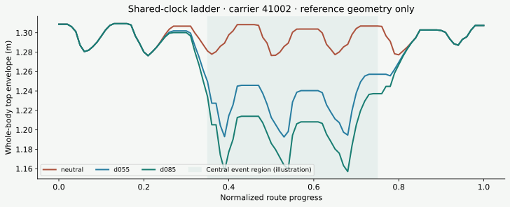
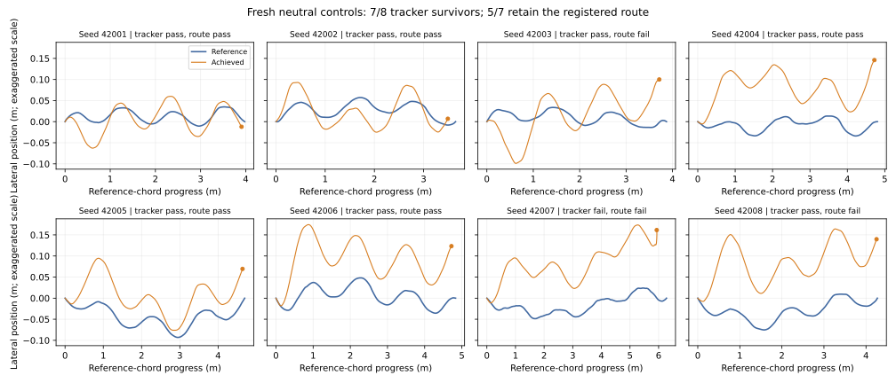

01 / The strongest observed examples
A real step forward.
Not yet the full inverse-learning loop.
The current positive results are reproducible motion acquisition, controlled reference ladders, successful walking executions, and a localized crouch retained in one recorded execution. The complete experiment yields below show where these successes stop.
Scope: the fresh-machine Kimodo qualification study reported here. Earlier SweepCF and parallel geometry-only hallucination experiments use different corpora and protocols; their results are not pooled with these counts. See the separate geometry-only self-audit for that track’s findings and identified defects.
Confirmatory references generated.
Eight independent shared seeds.
Fresh held-out walking runs accepted by the tracker gates.
Tracker survivors retain the route.
Below the registered 80% target.
Q4-qualified ladders or dataset-eligible critical scenes admitted.
Walking: reference and achieved motion
Crouching: a functional change survives tracking
Rendering contract: these videos assign archived joint/root states to the G1 MuJoCo model and call forward kinematics; they do not integrate physics. All panels share a camera following the first panel’s root and a common elapsed-time clock. Existing Isaac records supply the execution verdicts. Rendering at 30 fps uses nearest source frames (recorded at 50 fps). The videos are visual replays, not new MuJoCo trials or real-robot demonstrations.
02 / Method and research hypothesis
Motion does not reveal a room.
It can reveal a useful constraint.
Motion2Scene reverses the usual scene-to-motion question. Given an executable target and matched alternatives, infer a distribution of scenes in which the target is the least intense feasible adaptation. An empty room is compatible with crouching; a sufficiently low beam can make crouching necessary.
What changed
Prompt labels are treated as acquisition instructions—not behavior labels. We measure path-aligned whole-body envelopes, compare each adaptation with its same-seed/same-route walk, and construct deterministic same-carrier crouch variants when prompting alone does not yield eligible motions.
What stayed fixed
SONIC remains the tracking controller. Frozen source records, generation settings, selection manifests and qualification gates determine the outcomes. MuJoCo provides reference geometry and replay; it does not turn a reference animation into execution evidence.
The minimal-feasible label
Critical for level k: target clears, and every weaker level fails.
For a beam, the first analytic approximation is an interval between the target and weaker swept-height requirements, after reserved clearance and strike margins. A valid dataset record still needs exact geometry, obstacle-removal and jitter checks, qualified motions, and execution verification. Global optimality over all humanoid motions is not claimed.
Move the beam. Change the smallest feasible motion.
Toy required heights: 1.32, 1.28, 1.24 and 1.20 m, plus a 1 cm target clearance margin. This scalar example ignores the rest of the body, route, timing and dynamics.
03 / How the corpus is sampled
Pair the random seed.
Then test the functional effect.
The original 18-motion corpus remains pilot_characterization_v1, development-only. The next corpus froze one revised prompt grammar and reused each of eight fresh seeds across all 18 prompt cells.
Seeds 41001–41008 · 24 references per body mode · 48 per route
Acquisition distribution
Kimodo-g1-rp, four-second clips at 30 fps and 100 denoising steps. Body modes: walk, duck, arm tuck, shoulder turn, step-over and carry-walk. Routes: straight, gentle-left and gentle-right. Each shared seed supplies a complete factorial block.
The 144 outputs are not 144 independent experimental units. Shared-seed pairing controls the noise realization for clause comparisons; it does not make separately generated motions matched execution ladders.
Functional distribution
We measure whole-body top height and width normal to the local route, not just root height or world-axis width. Each non-neutral reference is paired with its same-seed, same-route walk. A strong peak effect can still fail localization, recovery, route alignment or joint limits.
Semantic levels: S0 absent → S1 elicited → S2 localized → S3 route-aligned → S4 controller-retained. Missing complete predicates stay not_measured, not “pass” or “fail.”
Exact prompt examples and reproducible design
Neutral straight-route prompt:
A person walks at a steady pace in a straight line
Same-route duck prompt:
A person walks at a steady pace in a straight line, then near the middle lowers into a crouch to pass under an obstacle, stands upright again, and continues walking
The same eight seeds are used for both prompts and the other 16 cells. Wording is not revised after inspecting confirmatory outputs.
Download the complete frozen 18-prompt grammarCritical geometry versus nuisance diversity
The future scene distribution is factored as S = R(K, ν): K specifies the critical beam/gap location and dimensions; ν varies noncritical context. In an analytic beam baseline, height can be sampled within a nonempty critical interval. Context variants must preserve the decision after rechecking—not merely look different.
All intensity variants, raw/repaired versions, critical-token renderings and physics repeats from one base carrier must stay together in dataset splits. Carrier/ladder groups are the independent units; nuisance scenes and physics seeds are repeated measurements. No learned scene distribution or downstream training result is reported yet.
04 / Motion and scene illustration
Same carrier. Same clock.
Different height envelopes.
After endpoint tracking failures in the original crouch batch, a shared-clock construction was registered to test timing as a possible cause. Neutral, d055 and d085 references receive the same time map, derived from the deepest adaptation’s activity. The minimum local pace is 70% of the original; total duration grows about 19–20%.
Reference geometry only / proposed beam scene
Across all eight shared-clock groups, 24/24 references pass Q0/Q1, and the 16 adapted references reach paired S3. All eight groups have ordered central heights; minimum adjacent separation per group ranges from 1.24 to 3.27 cm. These are candidate ladders. Their proposed nine-cell tracking pilot did not launch because its held-out route-validation prerequisite failed.
05 / Complete results, including the gates that failed
The bottleneck is the motion bank.
Prompt compliance alone did not produce eligible adapted supervision. Controlled geometry helped create ordered reference differences, but execution retention remains insufficient for admitting a robust ladder.

not_measured complete semantic labels. Right: one registered physics seed, eight controlled carriers, three levels each. Twelve rejected runs all have endpoint tracking error as their sole scientific rejection reason. Tracker acceptance is not S4 retention.| Experiment | Design / comparator | Measured outcome | What it supports |
|---|---|---|---|
| Confirmatory acquisition | 8 shared seeds × 18 prompts | 144/144 generated; Q0 132/144; Q1 144/144. Valid route classes: 34 straight, 16 left, 16 right; 65 over-turn, 11 looping/reversal, 2 insufficient progress. | Operational acquisition and behavior-dependent screening—not an execution-qualified adapted bank. |
| Original controlled ladders | 8 carriers × 5 levels | 40/40 Q0/Q1; 32 adapted references reach S3 (8 neutrals are not applicable). 7/8 ordered groups; 10/32 adjacent diagnostic reference intervals nonempty with 10 mm target + strike margins. | Some reference-level separability. Zero admitted dataset-critical scenes. |
| Original obstacle-absent Q3 | 8 carriers × neutral/d040/d055; seed 7600 | 24/24 completed; 12 accepted. By level: 8/8, 3/8, 1/8. S4: 0/16 adapted runs. 0.174 contended GPU-hours. | Walking survives more often than controlled crouching under the registered gates. No qualified three-level ladder. |
| Fresh route validation | 8 new neutral seeds 42001–42008; physics seed 7700 | 8/8 reference-admitted and completed; 7 tracker-accepted; 5/7 survivors pass relative route retention (5/8 overall). 0.068 contended GPU-hours. | 71.4% misses the preregistered 80% criterion. The relative-route gate is not validated under that criterion. |
| Shared-clock construction | 8 original carriers × 3 levels | 24/24 Q0/Q1; 16/16 adapted S3; 8/8 ordered reference groups; 0 physics launches. | Matched reference candidates only. Timing hypothesis remains untested in execution. |
All eight fresh route traces

Frozen route tolerances, instrumentation disagreement and interim-report correction
The held-out relative-route gate requires path-length and net-displacement ratios in [0.9, 1.1], endpoint error ≤ 0.35 m, heading-change error ≤ 20°, cross-track RMSE ≤ 0.10 m, maximum cross-track error ≤ 0.20 m, monotonic progress fraction ≥ 0.9, no reversal or self-intersection, and a valid reference route.
The older absolute route classifier marks seven tracker survivors as over-turn and the contact-rejected run as valid straight. This is disagreement between instruments, not grounds to discard measured route errors. In particular, 11.8 cm cross-track RMSE is consequential for scenes with centimetre-scale margins.
One interim four-run analysis incorrectly adjudicated the 80% prediction before the batch finished. That adjudication is invalid; only the complete eight-run relative_retention_result_v2.json is authoritative. This page uses that final result, with its source hash in the media manifest.
Why we are not training LfLH yet. There are no admitted Q4 ladders, no validated obstacle-present preference reversal, and no measured forward-policy utility. A learned generator would not resolve the present uncertainty about motion execution and route retention. The next result must be a qualified target succeeding where its qualified weaker counterpart fails because of the obstacle.
06 / What made progress possible—and what comes next
Make each uncertainty observable.
What worked in the process
- Shared-seed design: paired functional comparisons replace unpaired prompt-group anecdotes.
- Controlled adaptation: one carrier supplies multiple levels, preserving identity and route instead of relying on unrelated prompts.
- Trajectory-first recording: lightweight archived states support quantitative retention analysis and later rendering without rerunning physics.
- Evidence separation: generated, reference-valid, tracker-accepted and behavior-retained are different statuses.
Next registered tests
- Separate route-estimator sensitivity from actual controller drift without relaxing physical tolerances post hoc.
- Qualify retained motions over three frozen physics seeds; use strict 3/3 behavior retention for the main bank.
- Admit same-carrier ordered ladders, then exact critical intervals with removal and jitter checks.
- Test obstacle-present target-versus-weaker reversal before learning critical tokens or training a forward scene-to-skill model.
This is an E0/E1-stage research report, not a completed Motion2Scene-LfLH method evaluation. The proposed loop builds on Learning from Hallucination, Learning from Learned Hallucination and critical-point hallucination. Those papers motivate the research direction; they do not provide evidence for this project’s current results.
07 / Inspect and reproduce
Every visual has a source.
The media manifest records source artifact hashes, selected examples, joint-order conversion, camera settings, output hashes and the rendering contract. Portable JSON snapshots omit machine-specific path prefixes; their hashes are recorded separately from the original local source hashes.
Renderer source · Related SweepCF traversal infrastructure
Rebuild these figures and videos from the research bundle
MUJOCO_GL=egl .venv_research/bin/python \ scripts/research/render_motion2scene_report.py \ --data-root /path/to/research-data/groot-wbc \ --research-repo /path/to/motion2scene
Requires NumPy, MuJoCo, Matplotlib, Pillow, ImageIO/FFmpeg, the G1 meshes, and the trusted local motion/trajectory artifacts named in the manifest. The page publishes derived media and portable evidence, not the entire non-git research bundle. A fresh clone alone cannot recreate the videos without those inputs. The renderer checks recorded trajectory and reference CSV hashes before use.